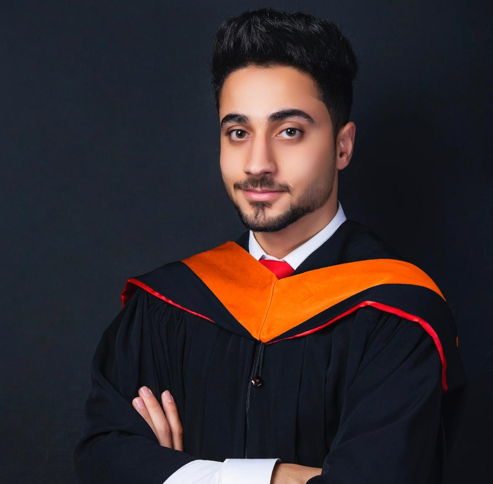

Hamza Al-Bzour

Contact Info
View Projects
Objective
To work in a challenging environment depending on my skills and
academic qualifications with a highly reputed and rewarding
organization, where i could progress and develop.
Education
 Bachelor's of Electrical Engineering
Bachelor's of Electrical Engineering
 Yarmouk University - Irbid - Jordan
Yarmouk University - Irbid - Jordan
 September 2015 - June 2020
September 2015 - June 2020
 GPA 3.05 / 4.00
GPA 3.05 / 4.00
Skills
- Problem solver
- Mathmetical Skills
- Programmimg Languages:
- Good Communication Skills
- Team Player
- Power systems analysis and modeling
- Self Learning
Certifications and Training
- Microcontrollers projects with Dr. Abdulkareem AlTamimi – YU 2017-2019
- PV systems modeling and renewable systems studies, with Dr.Hussein Al-masri Summer 2019
- Worked with Dr. Manal Al-Bzoor on a Yarmouk university funded project “innovative implementation of a smart E-learning room using IOT technologies" 2018-2020
- with Dr. Christopher Edrington in Energy conversion and management lab in smart grids control and cyper secutity - 2020-2021